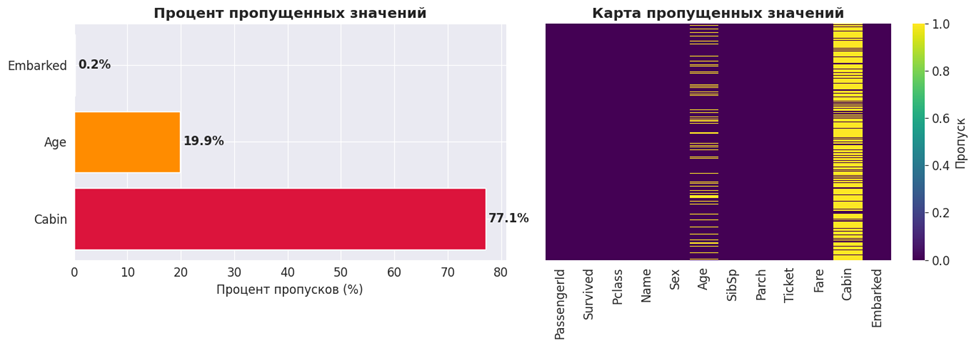
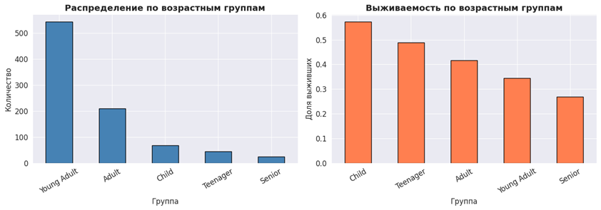
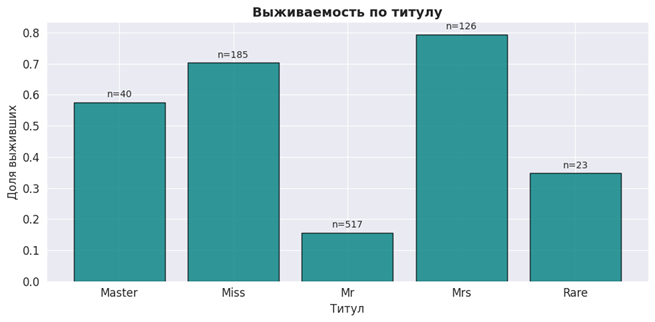
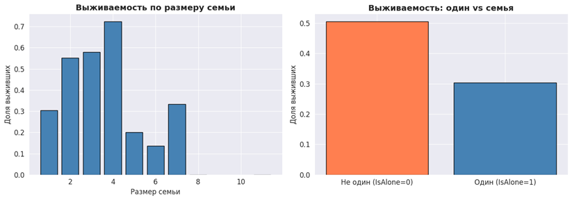
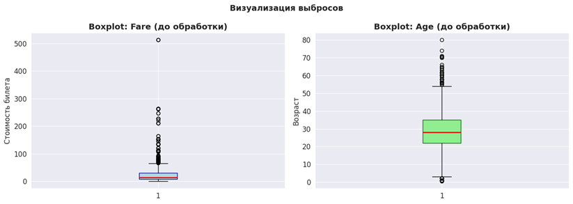
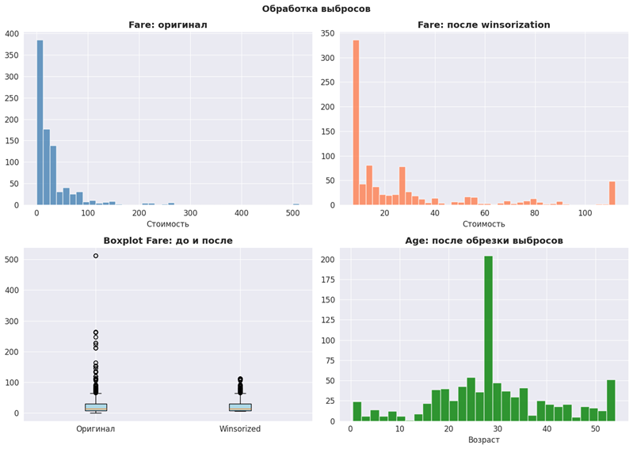
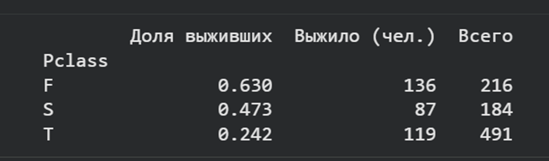
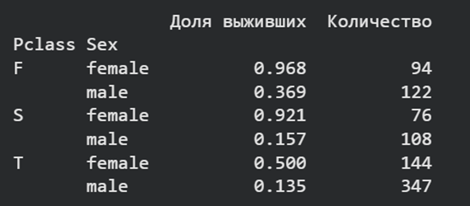
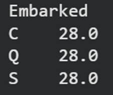
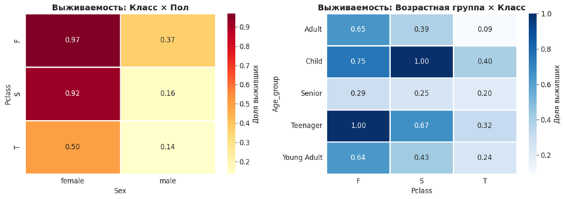

Лабораторная работа 6
Тема: Очистка и трансформация данных. pandas
1. Цель работы
Освоение методов очистки и трансформации данных с использованием библиотеки pandas на примере реальных данных из Kaggle.
2. Описание набора данных
В работе исследуется набор данных Titanic (train.csv),
содержащий информацию о пассажирах затонувшего лайнера.
- 891 строка (объектов) и 12 столбцов (признаков)
- Целевая переменная:
Survived— флаг выживания (0 — погиб, 1 — выжил)
3. Первичный анализ данных
Типы данных столбцов
| Столбец | Тип |
|---|---|
| PassengerId | int64 |
| Survived | int64 |
| Pclass | int64 |
| Name | object |
| Sex | object |
| Age | float64 |
| SibSp | int64 |
| Parch | int64 |
| Ticket | object |
| Fare | float64 |
| Cabin | object |
| Embarked | object |
Статистические характеристики
Fareимеет высокое стандартное отклонение (49.69) при среднем 32.20 — наличие значительных выбросовAge: среднее (29.70) ≈ медиане (28.00) — относительная симметричность распределения- Медианы
SibSpиParchравны нулю — большинство путешествовали без родственников
Визуализация пропусков
Пропущенные значения обнаружены в трёх столбцах. Построены: - Горизонтальная столбчатая диаграмма с процентами пропусков - Тепловая карта пропусков по всему датафрейму

4. Обработка пропусков
Age — заполнение медианой
Столбец Age содержит 177 пропусков (19.9%). Выбрана медиана,
так как она устойчива к выбросам. На основе Age создан новый признак
Age_group — пять возрастных категорий.

Embarked — заполнение модой
Столбец Embarked содержит 2 пропуска (0.2%). Оба заполнены
значением "S" (мода).
Cabin — создание нового признака
Столбец Cabin содержит 687 пропусков (77.1%) — прямое
заполнение нецелесообразно. Извлечена первая буква номера каюты
в новый признак Cabin_letter. Пассажирам без каюты присвоена
метка "Unknown". Исходный столбец Cabin удалён.
5. Трансформация данных
Созданные признаки
Title — извлечение титула из имени с помощью регулярного выражения.
Редкие титулы (Lady, Countess, Dr, Capt, Rev, Col и др.)
объединены в категорию "Rare".

FamilySize и IsAloneFamilySize = SibSp + Parch + 1 # сам пассажир IsAlone = 1 if FamilySize == 1 else 0
Доля одиночных пассажиров — 60.27% (537 из 891).
Наибольшая выживаемость зафиксирована при FamilySize = 4.

Преобразования типов
Pclass: числовой → категориальный строковый
| Значение | Метка |
|---|---|
| 1 | F |
| 2 | S |
| 3 | T |
Sex: строковый → числовой (в новый столбец Sex_numeric)
| Значение | Код |
|---|---|
| male | 0 |
| female | 1 |
6. Обработка выбросов
Выявленные выбросы

Построены boxplot дляFare и Age. Для количественного
определения применён метод межквартильного размаха (IQR).
Все выбросы Fare сосредоточены в верхней части — максимальное
значение 512.33 превышает верхнюю границу IQR почти в 8 раз.
Методы обработки
Winsorization для Fare — замена значений ниже 5-го и выше 95-го перцентилей на граничные значения.
Ограничение Age по 95-му перцентилю — все значения выше 54 лет заменены на 54.

7. Агрегация и анализ данных
Выполнены следующие группировки:
- Среднее выживание по классам (
Pclass)
- Группировка по
PclassиSex
- Медианный возраст по портам посадки (
Embarked)
- Матрица корреляции числовых признаков

8. Выводы
Результаты работы:
- Выполнена загрузка и проверка типов данных датасета Titanic
- Проведена обработка пропущенных значений тремя методами
- Сформированы новые признаки: Age_group, Title, FamilySize, IsAlone, Cabin_letter
- Аномальные выбросы стабилизированы с помощью винзоризации
- Построена матрица корреляций и графики распределения выживаемости
Выводы:
Библиотека pandas предоставляет гибкий и мощный инструментарий для полного цикла подготовки данных к машинному обучению.